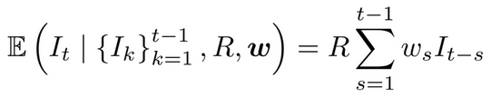
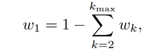
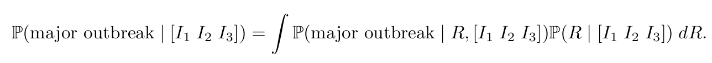

Epidemiological models
The underlying probability calculation methods is a discrete-time renewal process, a standard epidemic model for infectious disease dynamics that allows us to model new cases over time.
The expected number of new cases at a time is given by:

The basis of the equation
- The past cases
- How strongly those past cases contribute to new cases today, determined by the serial interval weights, Ws
- The average number of secondary cases per case, R
As is common in the lierature, any new cases are generated by drawing from a poisson distribution with this expected value.
We model transmission using a weekly discretised serial interval distribution w=(w1, w2, ...).
to construct these weights ,we begin with a continuous gamma distribution for the serial interval with mean 15.3 days and a standard deviation 9.3 days, consistent with estimates from the 2014-2016 West Africa Ebola epidemic
This can be visualised in the following equation:

Having defined the underlying epidemiological model, we can inestigate the key question: given early incidence data such as the first three weeks of case counts [I1,I2, I3], what is the probaility that a large outbreak will follow?
Estimation approaches
- Analytic solution- an analytic calculation based on branching process theory
- Trajectory matching- a trajectory matching approach using simulated outbreaks;
- Simulation- a machine learning classifier trained on large numbers of simulated outbreaks.

The posterior distribution captures the likelihood of different values of R given the early epidemic trajectory. The condition probability is informed by branching process theory and described the probability that the observed early cases gives rise to a major outbreak under fixed value of R. The overall outbreak probability is then obtained by integrating over the posterior distribution of R.
A step by step derivation of the analytical method consists of:
- Deriving the posterio distribution utilising Bayes rule
- Utillisin M as a normalising constant where we assume the number of cases in week 1 (I1) is unknown
- Noting that for no outbreak to occur that the I1+I2+I3 cases arising in the first three weeks don't generate cases which initiate a major outbreak after week 3